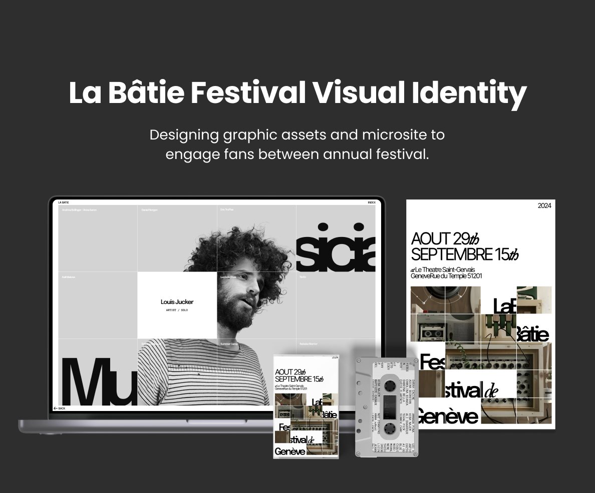
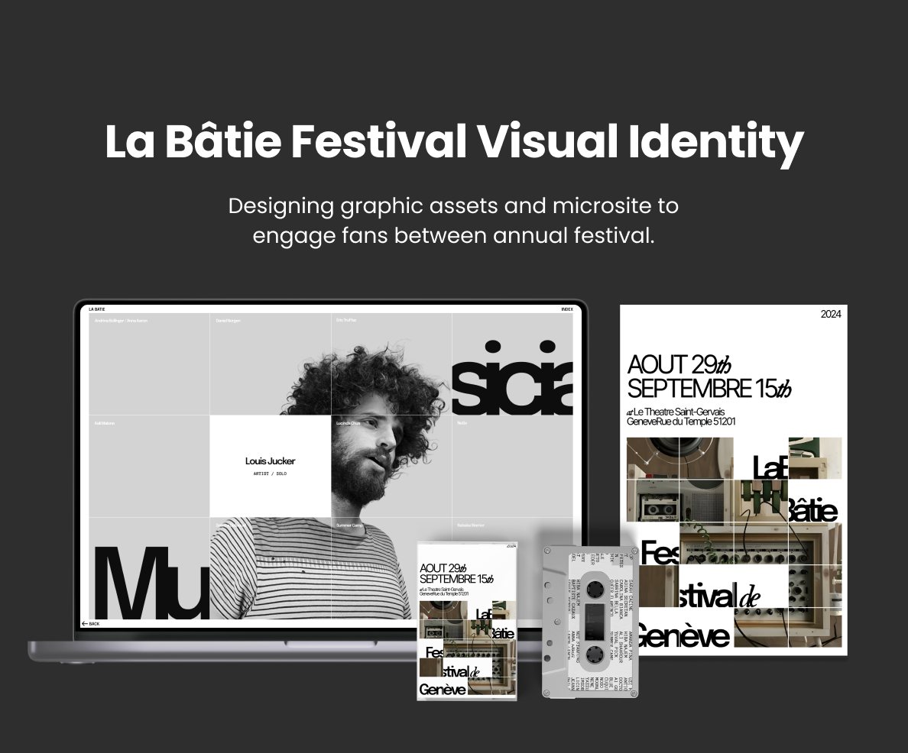

Team
Angela
Christy
MinRaymond
My Roles
Content Strategy
Graphic Design
Visual Design
Tools
Figma
Photoshop
Timeline
5 weeks, Spring 2024
Project Brief
In this academic project, teams were tasked with creating a visual identity through graphic assets and a microsite for a client. Our team was assigned La Bâtie - Festival de Genève.
The Client
Who is La Bâtie - Festival de Genève?
La Bâtie is an 18-day multidisciplinary festival primarily hosted in Geneva, Switzerland, with venues spread throughout Geneva and neighboring cities. It features diverse artists, both well-known and emerging, from local and international backgrounds.

Problem Statement
There is no way for festival goers to stay engaged with La Bâtie between their annual festivals.
Organizers and artists devote considerable effort to hosting the annual 18-day La Bâtie festival. However, outside of performances, fans lack opportunities to engage with artists or remain connected to La Bâtie between the annual festivals.
Problem Framing
How might we connect fans and artists between annual La Bâtie festivals to promote continuous interest in La Bâtie?
Solution
Design pre-event graphic assets and a post-event microsite to sustain interest between festivals.
The design solution consists of two parts:
1) Pre-event graphic assets, including promotional posters placed around Geneva and merchandise available for purchase, aimed at building anticipation for the festival.
2) A post-festival microsite providing insight into artists’ creative processes and personal
interests, fostering deeper connections between
fans and artists, and sustaining engagement after the festival.
Exploring Graphic Art Directions
Iterate, Iterate, Iterate
The team engaged in a deeply collaborative process, experimenting with type, color, and imagery across hundreds of iterations. Drawing inspiration from each other's ideas, these cumulative small decisions resulted in the development of three distinct art directions, each with their own unique set of graphic assets.
I have annotated my key contributions:
Direction 1
Direction 2
Direction 3 (Chosen Direction)
Graphic to Digital
After experimenting with all three directions, the third direction was chosen for the microsite, as it adapted best into digital design and interactions.
Adapting graphic design for microsite
Keeping the essential design qualities of the third graphic art direction, we made appropriate adjustments to accommodate to the diverse content across the microsite pages and allow for smooth digital interactions.
Information architecture to highlight artist content
We started by brainstorming what kind of artist related content would help fans connect with artists on a more personal level. I created a site map to help visualize the information architecture of our microsite.
Designing simple interactions to focus on content
We took inspiration from other websites to create simple, elegant interactions and page transitions, focusing the attention on artist content in order engage fans with artists. These were the main precedents:
Reiterate
Adjusting Graphic Assets
Learning to let go of attachments to design ideas
Despite our attachment to the graphic assets we thought we had finalized, we decided to adjust them to align with the new art direction of the microsite for a cohesive visual identity. This experience taught me the importance of prioritizing the project's success over personal preferences.
The result...
Prototype
Final Design Mockups
Key Design Decisions
Final Graphic Poster
The third art direction for the microsite because its visible grid system enabled efficient information organization. We retained key design decisions, such as grid and typography, but redesigned the graphic assets to align more cohesively with the microsite.

Key Design Decisions
Final Graphic Asset: Cassette Tapes
We adapted the new design for cassette tapes to provide festival attendees with a retro style collectable item to take away as memorabilia.
Preview
All Microsite Pages


Key Design Decisions
Loading Page
Key Design Decisions
Landing Page and About Page
Key Design Decisions
Moving into Artist's Page
Key Design Decisions
Artist's Page: Biography
Key Design Decisions
Artist's Page: Creative Process
Key Design Decisions
Artist's Page: Artist's Pick
Reflection
Things I learned...
1) In teamwork, prioritize the best work over diplomacy.
When working in a team, I learned that even though my work may not be used in the final product, it is equally valuable in the iterative process to increase our opportunity for success.
2) Wide explorations early on leads to optimal results.
The teaching team was impressed with our final product and I think one of the crucial factors in our success was that we generated hundreds of iterations, leveraging cumulative decisions to carry over the best work into later phases of the project.
3) Let go of emotional attachments.
I created work that I was really proud of and even if it wasn't used in the final product, and I have (mostly) learned to accept it and keep moving forward.